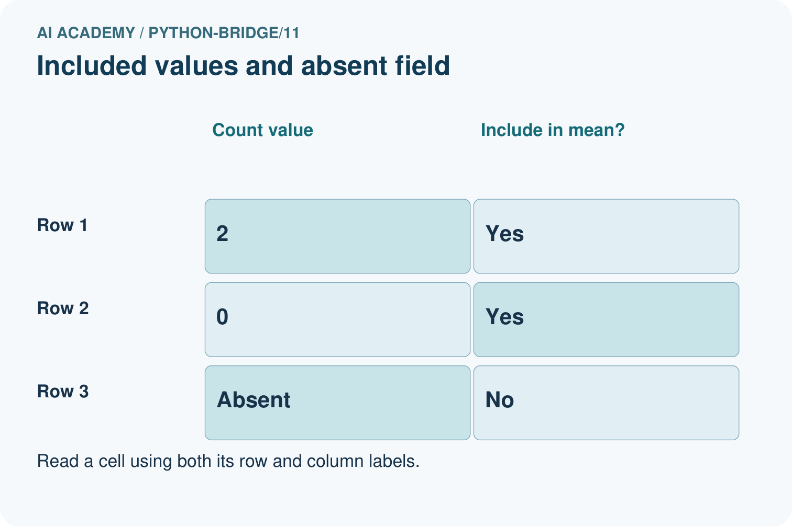
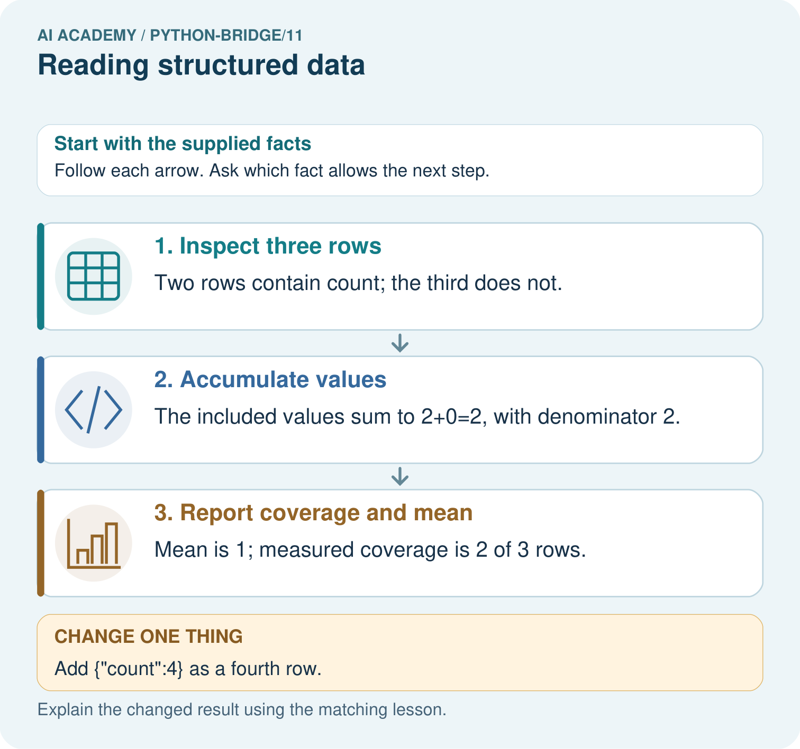

AI Academy · Python readiness bridge · Workbook
Reading structured data
Learn to understand, design, build, test and explain AI systems responsibly.
Project: Python readiness portfolio
Workbook · 1 of 13
Recall and choose your starting point
Try the recall before opening notes. Then use a different colour or a labelled second line to correct your explanation.
Dictionaries and records
Without opening the old lesson, explain one key idea from Dictionaries and records. Give an example and a mistake that the idea helps you avoid.
Functions and arguments
Without opening the old lesson, explain one key idea from Functions and arguments. Give an example and a mistake that the idea helps you avoid.
Branching and boundary tests
Without opening the old lesson, explain one key idea from Branching and boundary tests. Give an example and a mistake that the idea helps you avoid.
Workbook · 2 of 13
Practise with fading help
Use W2: Trace all updates for Reading structured data. Record the answer once; the lesson and workbook refer to the same attempt.
| Given inputs | Procedure I chose | Middle steps | Result and check |
|---|---|---|---|
Workbook · 3 of 13
Individual reasoning check
Use the worked case for Reading structured data. Proposed explanation: “A successful run proves the conclusion”. Decide whether this explanation is supported. Point to the step or supplied fact that decides; explain your repair if needed.
Workbook · 4 of 13
Independent transfer case
Independent case: Preserve records and report measured coverage
Trace the named fields and missing-value policy. Predict the output, state the observed total and mean denominator, and report coverage. What changes if all three rows are empty records?
rows = [{"score": 2}, {"score": 6}, {}]
values = []
for row in rows:
value = row.get("score")
if value is not None:
values.append(value)
observed_total = sum(values)
if len(values) > 0:
mean = observed_total / len(values)
else:
mean = None
print(observed_total, len(values), len(rows), mean)
Attempt this case before feedback. Record any help. Earlier examples below are further practice; a case already practised with feedback cannot establish fresh transfer.
Workbook · 5 of 13
W1 Read a row
In the worked dataset, state the number of records and the spare spaces in the second record.
Workbook · 6 of 13
W2 Trace all updates
For spare contributions 2, 4 and 1, trace total starting at 0.
Workbook · 7 of 13
W3 Repair initialization
A loop resets total to 0 on each pass over contributions 2, 4, 1. What final total appears and how should it be fixed?
Workbook · 8 of 13
W4 Process new records independently
Write a loop for records (capacity 9, used 2), (capacity 5, used 1), and (capacity 4, used 4). Predict the total. Reverse the order and test an empty list.
Workbook · 9 of 13
W5 Interpret an empty result
An empty dataset produces total 0. Can you conclude that every cupboard is full?
Workbook · 10 of 13
Project checkpoint and reflection
Add a labelled reading structured data evidence sheet to Python readiness portfolio. Show how you can process a list of records consistently. Use the supplied fictional case and keep its inputs, intermediate steps, calculation or prediction, and limitation. Connect this record to last week’s record; a matching answer without a trace is insufficient.
Workbook · 11 of 13
Feedback, return check and learning record
| Evidence | My record |
|---|---|
| Worked alone / hint / model | |
| First step I repaired and why | |
| New case checked later; date and result | |
| What I can now explain without notes | |
| One remaining question |
Revisit this idea with your teacher after a delay. Familiarity is different from explaining and using it on a changed case.
Workbook · 12 of 13
Pictorial case practice: Reading structured data
Read rows with a missing-field policy. A toy table is represented as a list of dictionaries; count only rows with a recorded count.
Python 3 records: [{"count":2},{"count":0},{}]. Policy: include existing numeric counts, including zero; skip an absent field.


Circle the included rows, calculate the sum and mean, and state coverage. Repeat after adding the fourth row with count four.
Support used: alone / hint / worked example. This record is practice evidence.
Project connection: For Python readiness before the Responsible Plant Classifier, retain a trace of the values, the predicted outputs and the changed-case explanation. Use actual Python 3 results to check the prediction after reasoning first.
Workbook · 13 of 13
Project portfolio milestone
Project: Python readiness portfolio
Current milestone: Python readiness portfolio. Keep runnable code, predictions, actual outputs, one repaired error and an explanation of a function on changed inputs.
For Python readiness before the Responsible Plant Classifier, retain a trace of the values, the predicted outputs and the changed-case explanation. Use actual Python 3 results to check the prediction after reasoning first.
| Evidence to keep | My record |
|---|---|
| This week’s input and deciding step | |
| Prediction and actual result (or labelled paper trace) | |
| One change since the previous checkpoint and why | |
| One error or limit and the next test |